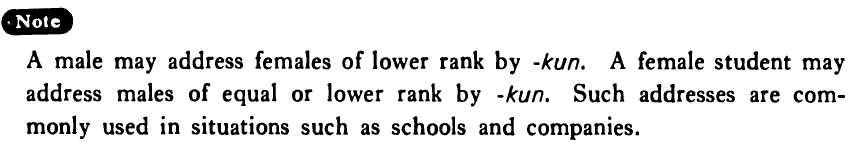

←
DoJG
→
君・くん
(B. 211)
Example sentences
(a).
もし、もし、一郎
君
いますか。
Hello, is Ichiro in?
(b).
田口
君
が来年結婚するそうだ。
I heard that Mr. Taguchi will get married next year.
(c).
田口一郎
君
、昇進おめでとう。
Mr. Ichiro Taguchi, congratulations on your promotion.
Formation
(i)
Last name
君
山田
君
Mr. Yamada
(ii)
First name
君
太郎
君
Taro
(iii)
Last name first name
君
山田太郎
君
Mr. Taro Yamada
